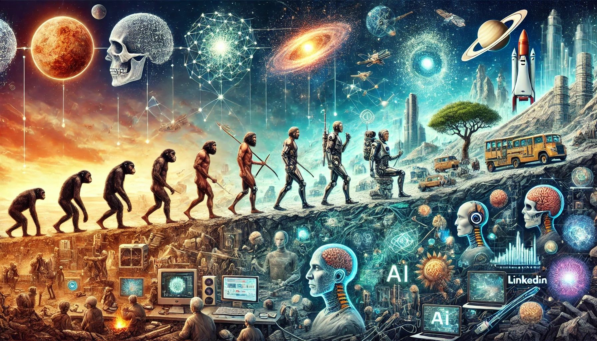

האם אנחנו הדור האחרון של הומו ספיאנס?
פורסם במקור ב LinkedIn
האם אנחנו הדור האחרון של הומו ספיאנס?
לפני כמה ימים הילדים שאלו אותי אם אזדקן ואמות יום אחד, עניתי בכנות -
'לא יודע, יכול להיות שלא'.
הומו ספיאנס, "האדם החושב", הוא המין הביולוגי שלנו, שהופיע לראשונה לפני כ-300,000 שנים.
אני מאמין שעוד בימי חיינו, האנושות תעבור שינויים כל כך מהותיים, שכבר לא נתאים להגדרה של הומו ספיאנס.
הדור שלנו יחווה בימי חיינו סדרה של שינויים בסדר גודל של בריאת החיים:
רפואה –
טכנולוגיית CRISPR משנה את הקוד הגנטי של החיים. כבר היום היא משמשת לטיפול במחלות גנטיות, כמו מחלת דושן (מחלת ניוון שרירים קטלנית שפוגעת בעיקר בילדים), עם הצלחה של עד 89% בתיקון מוטציות. יותר מ-6,000 ניסויים קליניים בוחנים את יכולתה לרפא סרטן, אנמיה חרמשית ואפילו HIV. בעתיד הקרוב, נוכל לבחור תכונות לילדים שלנו, להאריך את תוחלת החיים, וכנראה גם לעכב הזדקנות.
אנרגייה -
בעשרים השנים האחרונות מחירי האנרגיה הירוקה צנחו ב-90%. אנרגיית שמש ורוח הפכו לזולות ונגישות, כשייצור חשמל סולארי כבר עוקף פחם במדינות רבות. היתוך גרעיני מתקרב לספק אנרגיה אינסופית ונקייה, ומחירי הסוללות שירדו בכמעט 90% בעשור האחרון מאפשרים אחסון יעיל של אנרגיה מתחדשת.
מחשוב קוונטי -
בשנת 2019, מחשב קוונטי של גוגל פתר בעיה ב-200 שניות, שלמחשב-על רגיל היה לוקח 10,000 שנה לפתור. ההשקעות במחשוב קוונטי עולות היום על 30 מיליארד דולר בשנה, והטכנולוגיה צוברת תאוצה. עם פוטנציאל חישובי שגדול פי מיליונים מהמחשבים של היום, מחשוב קוונטי עשוי לאפשר פריצות דרך בבינה מלאכותית, כאלו שיעלו על היכולות הקוגניטיביות של האדם.
AI -
אנחנו מתקרבים לרגע שבו נברא אינטליגנציה מלאכותית-על (Superintelligence) – מכונה שתהיה חכמה מאיתנו בהרבה, תפתור בעיות שאנחנו אפילו לא יודעים איך לשאול, ותמציא דברים שאנחנו לא נבין. כיום, ההשקעות העולמיות בבינה מלאכותית חצו את רף ה-100 מיליארד דולר בשנה, והמערכות המתקדמות ביותר יכולות לנתח מיליארדי נתונים בשנייה. מומחים מעריכים שאינטליגנציה מלאכותית-על עשויה להיוולד בעשור הקרוב, ותביא לשינויים שישפיעו על הכל – מרפואה ועד כלכלה, באופן שעשוי להיות בלתי ניתן להבנה, כמו שנמלה תנסה להבין את המוח האנושי.
חלל -
חברות פרטיות כמו SpaceX משקיעות מיליארדים בפרויקטים של יישוב מאדים. מאז 2016, SpaceX ביצעה מעל 250 שיגורים מוצלחים, והחברה מתכננת לשגר את הטיסה המאוישת הראשונה למאדים בעשור הקרוב. על פי החזון של אילון מאסק, עד שנת 2050 עשויות להיות 1,000 חלליות שיביאו למושבה קבועה של מיליון בני אדם על מאדים. ייתכן שבעשורים הקרובים נראה את הדור הבא בונה חיים על פלנטות אחרות, ואולי הילדים שלנו כבר יבחרו לחיות מחוץ לכדור הארץ.
בקיצור -
אם נצליח להימנע מלהכחיד את עצמנו – בין אם בגלל התחממות גלובלית כי אנחנו שורפים בטירוף דלקים, או בגלל יצירת AI שיראה בנו מתחרים על משאבים – העתיד יכול להיות סבבה. עם אנרגיה אינסופית, ביוטכנולוגיה שתפתור מחלות ומוות, ואפילו אפשרות לחיים על פלנטות אחרות, אנחנו עומדים בפני תקופה ממש מגניבה.
רק צריך להחזיק מעמד כדי לזכות לראות את כל זה מתגשם 😅
Vic Levitin #newlife
